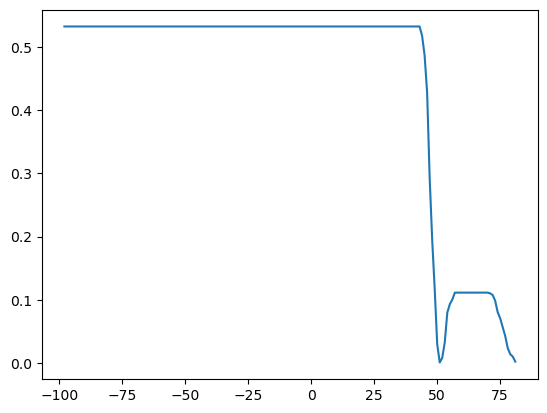
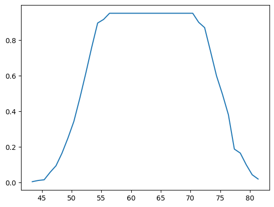

import numpy as np
import pandas as pd
import matplotlib.pyplot as plt
import seaborn as sns
import sklearn.metrics- 의사결정나무의 수동구현은 위에서 제시된 모듈 (numpy, pandas, sklearn.metrics, matplotlib, seaborn) 만을 사용해야하며 이외의 모듈을 사용할 경우 0점 처리함.
- True/False를 판단하는 문제는 답만 써도 무방함. (이유를 써도 상관없음)
- Treu/False의 판단 문제는 모두 맞출 경우만 정답으로 인정함. 다만 틀린이유가 사소하다고 판단할경우 감점없이 만점처리함.
1. 의사결정나무의 수동구현 (70점)
df_train = pd.read_csv('https://raw.githubusercontent.com/guebin/MP2023/master/posts/height_train.csv')
df_train| weight | sex | height | |
|---|---|---|---|
| 0 | NaN | male | 164.227738 |
| 1 | NaN | male | 165.798660 |
| 2 | 75.219015 | male | 165.528672 |
| 3 | NaN | male | 163.706442 |
| 4 | 81.476750 | male | 165.501403 |
| ... | ... | ... | ... |
| 275 | 49.308558 | female | 148.587771 |
| 276 | NaN | male | 164.822474 |
| 277 | NaN | male | 163.907671 |
| 278 | NaN | male | 161.674476 |
| 279 | 53.714772 | female | 146.775975 |
280 rows × 3 columns
(1) df_train에서 “sex”,“weight”를 설명변수로 “height”을 반응변수로 설정하라. 결측치가 있을 경우 결측값에 일괄적으로 -99로 채워넣어라.
X = df_train.loc[:,'weight':'sex']
X = X.fillna(-99)
y = df_train['height'](2) height열의 평균으로 height의 값을 추정하라. 추정값을 yhat에 저장하라. sklearn.metrics.r2_score()을 이용하여 r2_score를 계산하라.
yhat = np.full(len(y),y.mean())
sklearn.metrics.r2_score(y,yhat)0.0(3) 아래를 계산하라.
r=y-yhat
여기에서 yhat은 (2)의 결과로 얻어진 적합값을 의미한다. 이제 r에 Weight를 기준으로 의사결정나무를 적용하여 아래와 같은 분할을 만들어라.
X['weight']<cX['weight']>=c
sklearn.metrics.r2_score()를 이용하여 최적의 \(c\)값을 구하여라.
r = y - yhat;r.head()0 6.241209
1 7.812131
2 7.542143
3 5.719914
4 7.514874
Name: height, dtype: float64def fit_predict(X,r,c):
X = np.array(X).reshape(-1)
r = np.array(r)
rhat = r*0
rhat[X< c] = r[X< c].mean()
rhat[X>= c] = r[X >= c].mean()
return rhatcuts = np.arange(X['weight'].min()+1, X['weight'].max())
score = np.array([sklearn.metrics.r2_score(r,fit_predict(X['weight'],r,c)) for c in cuts])
plt.plot(cuts,score)
c = cuts[score.argmax()]
rhat = fit_predict(X['weight'],r,c)
c, rhat[:5](-98.0,
array([ 6.86933485, 6.86933485, -5.86850461, 6.86933485, -5.86850461]))(4) (3)의 결과로 얻어진 아래의 분할을 고려하자.
X['weight'] >= c이 분할에서 depth=2 로 나무를 성장하고자 한다. 성장이가능한가? 성장이 가능하다면 이때 나무를 성장시키기 위한 변수로 weigth와 sex중 무엇이 적절한가? 왜 그렇다고 생각하는가?
- 아래 결과 weight, sex의 r2_score가 같게 나왔다.
[1] weight 분할
X1 = X[X['weight'] >= c]['weight']
y1 = y[X['weight'] >= c]
y1hat = np.full(len(y1),y1.mean())
r1 = y1 - y1hatcuts1 = np.arange(X1.min()+0.1, X1.max());cuts1
score1 = np.array([sklearn.metrics.r2_score(r1,fit_predict(X1,r1,c)) for c in cuts1])
plt.plot(cuts1,score1)
score_weight = score1.max()
c1 = cuts1[score1.argmax()]
rhat1 = fit_predict(X1,r1,c1)
c1, rhat1[:5](56.38466063107373,
array([12.99170343, 12.99170343, -4.68169493, 12.99170343, -4.68169493]))[2] sex 분할
X2 = X[X['weight'] >= c]['sex']def fit_predict_sex(X,r):
X = np.array(X).reshape(-1)
r = np.array(r)
rhat = r*0
rhat[X == 'female'] = r[X == 'female'].mean()
rhat[X == 'male'] = r[X == 'male'].mean()
return rhatscore_sex = sklearn.metrics.r2_score(r1, fit_predict_sex(X2,r1))score_weight, score_sex(0.9522972193365125, 0.9522972193365125)(5) (3)의 결과로 얻어진 아래의 분할을 고려하자.
X['weight'] < c이 분할에서 depth=2 로 나무를 성장하고자 한다. 성장이가능한가? 성장이 가능하다면 이때 나무를 성장시키기 위한 변수로 weigth와 sex중 무엇이 적절한가? 왜 그렇다고 생각하는가?
- -99 이하인 경우, -99인 값이 하나이고 성별로 봤을 때도 남자 뿐이여서 성장 불가능하다.
(6) (3)-(5)의 결과를 이용하여 depth=2인 의사결정나무에 의한 r의 적합값을 구하여라. 이를 이용하여 yhat을 update하라. 이때 학습률은 0.1로 설정하고 업데이트된 결과를 yhat2로 저장하라.
그리고sklearn.metrics.r2_score()을 이용하여 y와 yhat2의 r2_score를 계산하라.
힌트: 아래의 알고리즘이 동치임을 이용하라.
yhat2\(\leftarrow\)yhat+ 학습률 \(\times\)rhatr2\(\leftarrow\)r- 학습률 \(\times\)rhat, wherer2=y-yhat2
# r[X['weight'] < c]
r[X['weight'] >= c] = r1
r = np.array(r)
# rhat[X['weight'] < c]
rhat[X['weight'] >= c] = rhat1
# yhat[X['weight'] < c]
yhat[X['weight'] >= c] = y1hat
r[:5], rhat[:5], yhat[:5](array([ 6.24120927, 7.81213147, 13.41064801, 5.71991353, 13.38337907]),
array([ 6.86933485, 6.86933485, 12.99170343, 6.86933485, 12.99170343]),
array([157.98652826, 157.98652826, 152.11802365, 157.98652826,
152.11802365]))yhat2 = yhat + 0.1*rhatsklearn.metrics.r2_score(y,yhat2)0.381893964742826(7) (6)에서 학습률이 0.5일 경우 y와 yhat2의 r2_score를 계산하라.
yhat3 = yhat + 0.5*rhatsklearn.metrics.r2_score(y,yhat3)0.785004969391582. 다음을 읽고 참거짓을 판단하라. (30점)
(1) 의사결정나무에서 max_depth의 설정값이 커질수록 오버피팅의 위험이 있다. 답) 네
(2) 배깅의 설명변수중 일부를 drop 하며 나무를 성장시킨다. 답) 네. 랜덤포레스트
(3) 랜덤포레스트는 나무가지를 랜덤으로 성장시키기도 하고 파괴시키기도 한다. 답) 아니요
(4) 부스팅은 여러가지 의사결정나무의 적합값을 평균내는 방식으로 최종예측을 한다. 답) 네
(5) Accuracy는 분류문제에서 언제나 가장 합리적인 평가지표이다. 답) 아니요
(6) 모듈49의 아래그림은 “sex == ‘male’” 일 경우 “sex=‘female’” 일때보다 항상(=모든 관측치에 대하여) 키의 예측값을 +2.1 만큼 보정해야 한다는 것을 의미한다. 답) 아니요

(7) 모듈54에서 제시된 아래의 그림은 사실 전혀 고려할 필요가 없다. 답) 아니요..?? 전혀까지는 아니고 참고용으로만?

왜냐하면 Exercise는 범주형, Weight_Loss는 연속형이므로 correlation값은 의미가 없기 때문이다. 답) 네. 실제로 상관관계가 있어도 0에 가까운 값이 나올 수 있기 때문에
(8) 시계열분석에서 static_feature란 이미 알고있는 미래의 시계열자료를 의미한다. 답) 아니요
(9) 모듈59에서 소개된 자전거대여자료와 같이 시간특징이 포함된 자료는 언제나 (과거를 기반으로 미래를 예측하는) 시계열분석을 하는 것이 올바르다. 답) 아니요
(10) 모듈60에서 소개된 하이퍼파라메터 설정법을 이용하면 때때로 모형의 적합도를 높일 수 있다. 답) 네